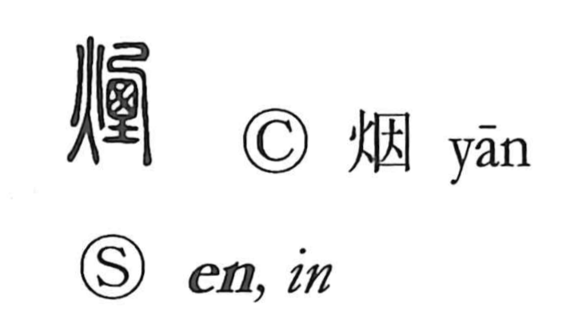

煙

Uncategorized
Kun: kemuri, kemuru, kemui, kemutai | On: en
smoke ・ smoky ・ haze ・ mist ・ vapor ・ to smoke
Explanation
煙 is a phono-semantic character. The left component 火, “fire,” signals the sense of smoke. On the right is the phonetic 垔, built from 亞 and 土: it depicts a clay cooking stove with a side flue (the vent indicated by the element written 西), the whole enveloped in smoke that drifts outward. This phonetic provides the on reading en and also appears in characters like 湮, where it carries the idea of being shrouded or buried, reinforcing the image of smoke that covers and obscures. From the scene of a smoking stove, 煙 came to mean thick smoke itself and, by extension, anything with a smoke-like appearance—haze, vapor, or mist.